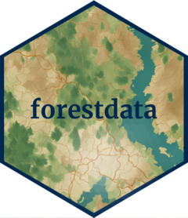

TALLO database
fd_allometry_tallo.RdDownloads the TALLO database, a global tree allometry and crown architecture database. Over 500,000 data points of individual trees with several measurements
Arguments
- country
a character vector with either ISO2 codes, ISO3 codes or full country names (not mixed) to filter out the data
- spatial
logical. Whether to retrieve a
tibbleor asfobject- metadata_path
a character string of length 1 with the path to store the metadata and bibliography. The default
path_metadata = NULLdoes not download the metadata- quiet
if
TRUE, suppress any message or progress bar
References
Tallo: A global tree allometry and crown architecture database. https://doi.org/10.1111/gcb.16302
Examples
# \donttest{
## Download full database as tibble
tallo_tbl <- fd_allometry_tallo()
#> Cite this dataset using <https://doi.org/10.1111/gcb.16302>
## Download full database as sf
tallo_sf <- fd_allometry_tallo(spatial = TRUE)
#> Cite this dataset using <https://doi.org/10.1111/gcb.16302>
## Download data as sf for Czechia and Germany
tallo_cz_ge_sf <- fd_allometry_tallo(country = c("Czechia", "Germany"))
#> You selected a country, so the function will use `spatial = TRUE` automatically
#> Cite this dataset using <https://doi.org/10.1111/gcb.16302>
# }